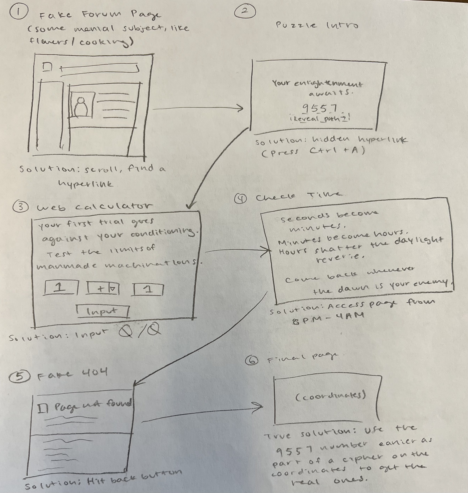

An Alternative Reality Game (ARG) website that blends digital puzzle-solving with real-world exploration
Timeline:
September 2025-December 2025
Tools:
Figma, HTML, CSS, Javascript
Role:
UX/UI Designer, UX Researcher, Web Designer, Frontend Developer
Project Overview
This project is an Alternative Reality Game (ARG) website. It blends digital puzzle-solving with real-world exploration. This game is designed to challenge players with a series of puzzles and ultimately discover a secret real-world prize hidden somewhere on campus! The ARG itself is supposed to be similar in vein to classic ARGs such as Cicada 3301 or the “ILOVEBEES" marketing campaign. It was also inspired by the Mark Z. Danielewski book, "House of Leaves”.
Research
I conducted research on ARGs and their design principles, focusing on how to integrate puzzles seamlessly into a website while maintaining an immersive experience. I watched YouTube videos on the process of solving the most popular ARGs and also trying to access and solve some of them (or their replicas) myself to help our fellow classmates and professor have an overall great experience. I also explored into how to incorporate web elements to proceed onto the next page, creating a learning experience for the users about computer science concepts.
Low-Fidelity Wireframes
I focused my design on disguising the puzzles on each web page. I used pencil and paper to sketch the low-fidelity wireframes out.

High-Fidelity Prototype
For the first page, I used Figma to create a detailed design that incorporated all the elements from the low-fidelity wireframes as this page's design was the most complex. The other pages were solely designed off of my low-fidelity wireframes and implemented along the way.
The Puzzle Solutions
Page 1 is a fictional food discussion forum. It visually appears to be a functional message board where the user can comment, like or dislike a post, use the search function, save a post, or go to specified food category: but its true purpose is to conceal the hyperlink that leads users to the next stage of the puzzle. By requiring users to scroll to the footer to discover a disguised URL "https://www.answersrighthere.com." Page 2 introduces cryptographic elements by providing a Base64-encoded hint. You need to press 'Ctrl + A' to find the button. Later, Page 2’s hidden content becomes essential for Page 6. Page 3 shows a calculator where you need to compute the math problem to get to the next page. Page 4 uses real-world EST time to unlock the next clue. Daytime (4am–6pm): The page displays a message instructing users to return later with a countdown timer to nightfall. Nighttime (6pm–4am): The page reveals a puzzle, activates dark-mode styling, and displays what seems to be a white black, but is actually an image containing a hidden message. Users must extract the hidden message via image editing, then decode it using a Caesar cipher (+3), yielding the password “nocturne.” Users then click the moon image on the bottom of the page to be able to enter "nocturne". Next is an audio puzzle; users must download and reverse the audio clip in order to get the next clue, which is a text-to-speech audio of the word “crescent” in NATO phonetic alphabet. Once the correct input has been entered, it leads to Page 5. Page 5 mimics the classic Internet Explorer 6 “Page Not Found” error screen. Users need to click a manually inserted “back” link on the page: an action that's unusual in modern web design. The final stage requires users to convert long blocks of binary into text, interpret the resulting riddle, recall the cipher code from Page 2 and submit the correct numerical input. Upon submitting the correct value (verified via MySQL lookup), users receive the real reward coordinates corresponding to an abandoned warehouse at Skytop Quarry. This multi-step design synthesizes skills learned across all prior pages.